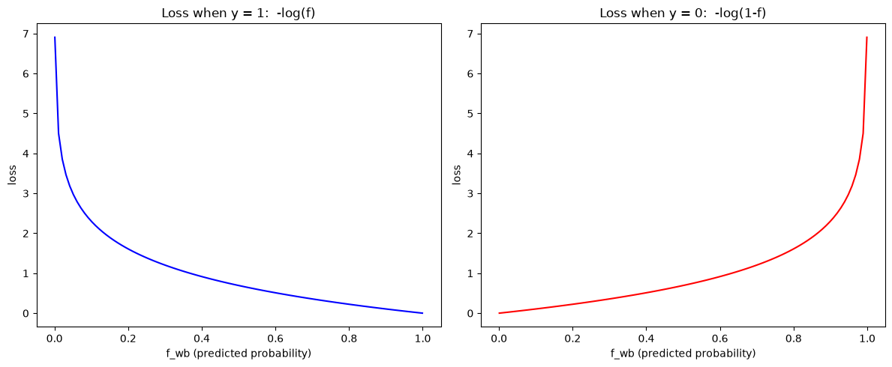

Why two separate curves — the loss function needs different behavior depending on the true label:
When \(y=1\): loss should be near 0 if the model predicts close to 1 (confident and correct), and blow up toward \(\infty\) if the model predicts close to 0 (confident and wrong).
When \(y=0\): the opposite — loss near 0 if prediction is close to 0, blowing up if prediction is close to 1.
\(-\log(f)\) and \(-\log(1-f)\) are exactly the two functions with this shape. Plotting them side by side makes this visible directly.
import numpy as np
import matplotlib.pyplot as plt
f = np.linspace(0.001, 0.999, 100) # avoid exactly 0 or 1 — log(0) is undefined
loss_y1 = -np.log(f) # loss when y=1
loss_y0 = -np.log(1 - f) # loss when y=0
fig, axes = plt.subplots(1, 2, figsize=(12, 5))
axes[0].plot(f, loss_y1, color='blue')
axes[0].set_xlabel('f_wb (predicted probability)')
axes[0].set_ylabel('loss')
axes[0].set_title('Loss when y = 1: -log(f)')
axes[1].plot(f, loss_y0, color='red')
axes[1].set_xlabel('f_wb (predicted probability)')
axes[1].set_ylabel('loss')
axes[1].set_title('Loss when y = 0: -log(1-f)')
plt.tight_layout()
plt.show()

Why logistic regression doesn’t reuse linear regression’s cost — squared error, \(\big(f_{\mathbf{w},b}(x)-y\big)^2\), when combined with the sigmoid function inside it, produces a cost surface \(J(\mathbf{w},b)\) that’s non-convex — it has multiple local minima. Gradient descent can get stuck in a local minimum instead of finding the true (global) minimum.
Log loss, by contrast, produces a convex cost surface — one global minimum, guaranteeing gradient descent converges to the correct answer (given a reasonable \(\alpha\)). This single-variable comparison below shows the shape difference directly, holding \(y=1\) fixed and varying the prediction \(f\).
f = np.linspace(0.001, 0.999, 100)
y = 1
squared_error_loss = (f - y) ** 2
log_loss = -np.log(f)
plt.figure(figsize=(8, 5))
plt.plot(f, squared_error_loss, color='orange', label='Squared error: (f-y)^2')
plt.plot(f, log_loss, color='blue', label='Log loss: -log(f)')
plt.xlabel('f_wb (predicted probability)')
plt.ylabel('loss')
plt.title('Squared Error vs Log Loss (y=1)')
plt.legend()
plt.show()
Why combine into one line — the piecewise definition is clear for understanding, but awkward to code (needs an if/else per example). Since \(y\) is always either 0 or 1, this algebraic trick combines both cases into a single expression — when \(y=1\), the second term multiplies by 0 and vanishes; when \(y=0\), the first term vanishes:
def sigmoid(z):
return 1 / (1 + np.exp(-z))
def compute_loss_single(f_wb, y):
"""Verifies the combined formula matches the piecewise definition for one example."""
return -y * np.log(f_wb) - (1 - y) * np.log(1 - f_wb)
# check the combined formula reduces to the correct piece for both y cases
f_example = 0.8
print(f"y=1: combined = {compute_loss_single(f_example, 1):.4f}, piecewise (-log(f)) = {-np.log(f_example):.4f}")
print(f"y=0: combined = {compute_loss_single(f_example, 0):.4f}, piecewise (-log(1-f)) = {-np.log(1-f_example):.4f}")
y=1: combined = 0.2231, piecewise (-log(f)) = 0.2231
y=0: combined = 1.6094, piecewise (-log(1-f)) = 1.6094
From single-example loss to full cost — a single example’s loss (Chunk 3) only tells you how wrong the model was on that one point. To train the model, you need the cost function \(J(\mathbf{w},b)\): the loss averaged across the entire training set.
Same structural pattern as compute_cost for linear regression earlier in this conversation: loop over i, compute the prediction (z_i then f_wb_i via sigmoid), accumulate the per-example loss, then divide by m once — outside the loop — at the end.
np.dot(X[i], w) — dot product of example i’s feature row with w, giving \(\mathbf{w}\cdot\mathbf{x}^{(i)}\), a scalar. Same operation as linear regression’s f_wb = np.dot(X[i], w) + b, just fed through sigmoid() afterward here.
def compute_cost_logistic(X, y, w, b):
"""
Computes cost
Args:
X (ndarray (m,n)): Data, m examples with n features
y (ndarray (m,)) : target values
w (ndarray (n,)) : model parameters
b (scalar) : model parameter
Returns:
cost (scalar): cost
"""
m = X.shape[0]
cost = 0.0
for i in range(m):
z_i = np.dot(X[i], w) + b # z^(i) = w . x^(i) + b
f_wb_i = sigmoid(z_i) # f_wb^(i) = g(z^(i)), the sigmoid prediction
cost += -y[i]*np.log(f_wb_i) - (1-y[i])*np.log(1-f_wb_i) # combined loss formula from Chunk 3
cost = cost / m # average over all m examples — completes J(w,b)
return cost
# quick sanity check on a tiny toy dataset
X_toy = np.array([[1.0], [2.0], [3.0]])
y_toy = np.array([0, 0, 1])
w_toy = np.array([0.5])
b_toy = -1.0
print(f"Cost on toy data: {compute_cost_logistic(X_toy, y_toy, w_toy, b_toy):.4f}")
Cost on toy data: 0.5471